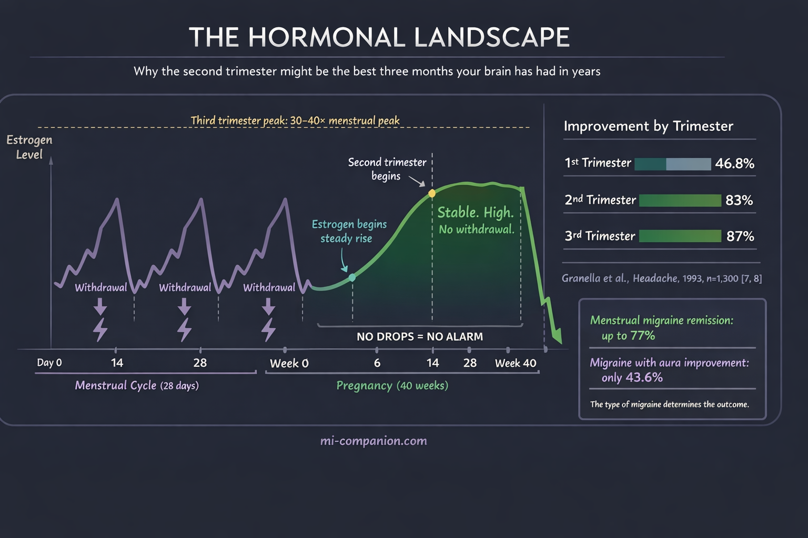
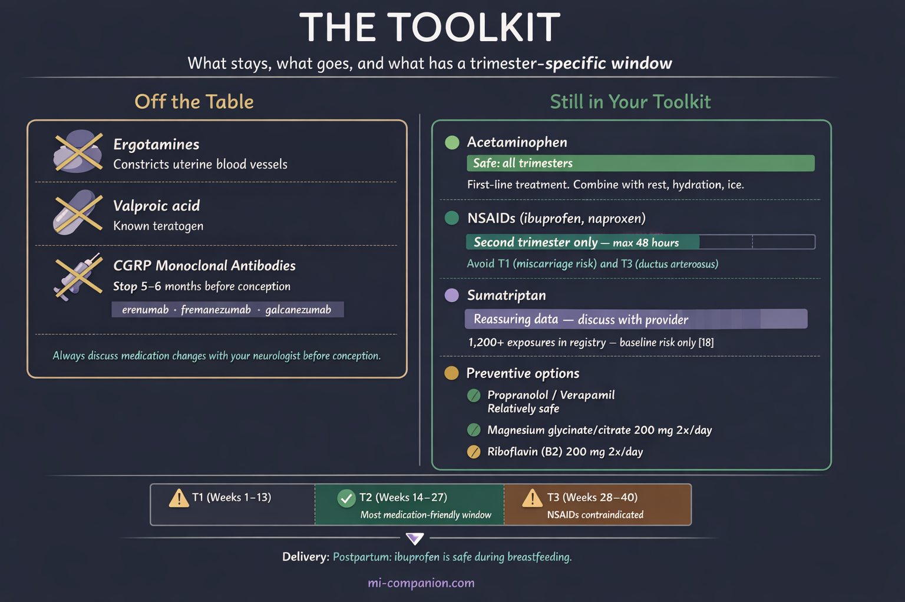
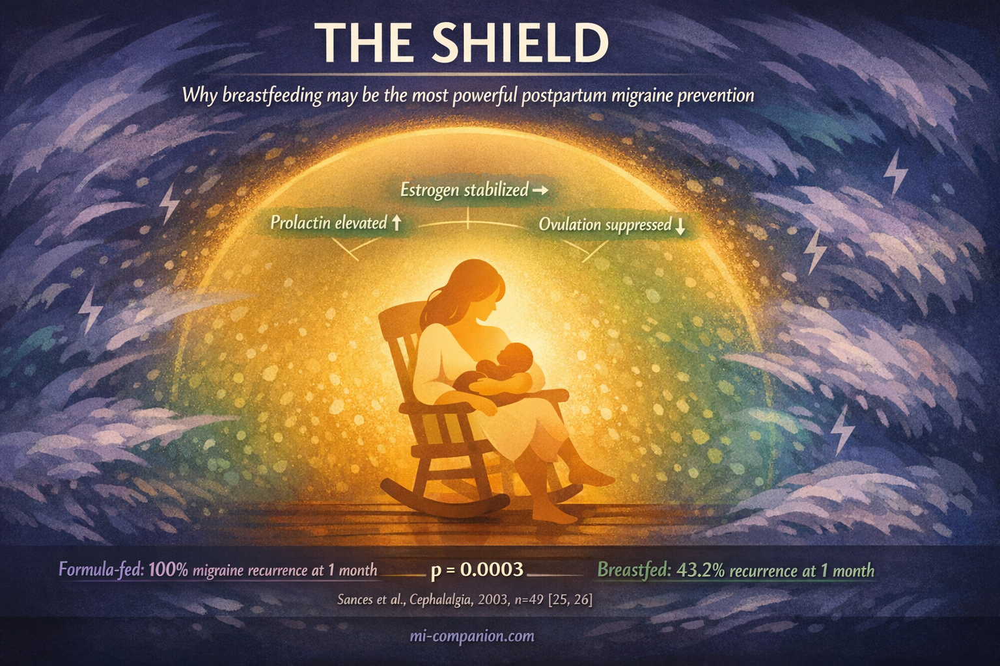

By Rustam Iuldashov
30 years lived experience with chronic migraine | Sources: 27 peer-reviewed references including Cephalalgia (n=1,300), Frontiers in Pharmacology (n=767,994), Cureus, Headache, Brain | Last updated: March 9, 2026
Medical Review: This content is based on peer-reviewed research from Cephalalgia, Frontiers in Pharmacology, Headache, Brain, Neurol Sci, Expert Opin Drug Saf, Frontiers in Pain Research, and the American Headache Society.
Important Notice: This article is for informational purposes only and does not replace professional medical advice. The author is not a licensed physician or healthcare professional. Always consult your doctor before making changes to your treatment plan, especially during pregnancy.
Key Takeaways
- 50–80% of women with migraine improve during pregnancy, especially in the second and third trimesters, due to stable, elevated estrogen levels[5, 6, 7]
- Women with migraine with aura are less likely to improve and may experience new-onset aura during pregnancy[8]
- Acetaminophen is first-line throughout pregnancy. Triptans — especially sumatriptan — have reassuring safety data when acetaminophen fails[18, 19]
- CGRP monoclonal antibodies should be stopped at least 5–6 months before conception due to limited safety data and long half-life[14, 15]
- Migraine doubles the odds of preeclampsia — monitor blood pressure closely and know the emergency signs[22]
- Breastfeeding may delay postpartum migraine recurrence by stabilizing hormones through elevated prolactin[25, 26]
You’ve spent years learning your migraine. The triggers, the warning signs, the exact medication you reach for at 2 a.m. Then the pregnancy test comes back positive — and the rulebook you built gets tossed out.
Some medications are no longer safe. Your body is rewriting itself in ways no trigger diary predicted. And the question no one can answer with certainty: will the migraines get better, get worse, or do something nobody expected?
For roughly one in five women of reproductive age,[1] pregnancy introduces a strange paradox. The same hormones surging through your body can silence your attacks — or amplify them. Understanding why, and knowing what’s still available to you, turns nine months of fear into nine months of informed decisions.
The Estrogen Equation
The link between migraine and estrogen is one of the most studied relationships in headache medicine. The short version: it’s not the level that triggers migraine. It’s the drop.[2]
Researchers call this the estrogen withdrawal hypothesis. When estrogen falls sharply — as it does before menstruation — it triggers a cascade that activates the trigeminal nerve, the brain’s primary pain highway.[3] Menstrual migraine is so common precisely because that steep hormonal decline acts like a pulled fire alarm.
Pregnancy rewrites the equation. By the sixth to eighth week, estrogen and progesterone begin a steady climb. By the third trimester, estrogen reaches 30 to 40 times its peak during a normal menstrual cycle.[4] And crucially, those levels stay high and stable. No drops. No withdrawal. No alarm.
This is why 50% to 80% of women with migraine improve during pregnancy, particularly after the first trimester.[5, 6] The numbers are striking: improvement rates climb from 46.8% in the first trimester to 83% in the second and 87% in the third.[7] For women whose attacks track closely with menstruation, remission rates reach as high as 77%.[8]
The second trimester surprise? By week 14 or so, the hormonal rollercoaster flattens into a long, steady plateau. For many women, the attacks simply stop.

When Pregnancy Makes It Worse
Not everyone gets this reprieve. Between 4% and 8% of women see their migraines worsen, and some develop migraine for the first time — usually in the first trimester.[5, 9]
The pattern centers on aura. Women with migraine with aura are far less likely to improve. Only 43.6% experience relief, compared to 76.8% of those without aura. Nearly half — 48.7% — see no change at all, and 7.7% actually get worse.[8]
The mechanism may be paradoxical. While stable, high estrogen quiets the triggers behind migraine without aura, it appears to increase susceptibility to cortical spreading depression — the slow wave of altered electrical activity that produces aura.[10] The hormonal stability that calms one type of migraine may stir up another.
New-onset migraine during pregnancy, which affects 1.3% to 18% of women depending on the study, is also predominantly migraine with aura. The rapid initial rise in estrogen, rather than withdrawal, may be the culprit.[7, 11]
What’s Off the Table
Some of the most effective migraine medications are either unsafe or unstudied in pregnancy. Ergotamines are strictly contraindicated — they constrict blood vessels and can reduce uterine blood flow.[12] Valproic acid, sometimes used for prevention, is a known teratogen.[13] The newer CGRP monoclonal antibodies (erenumab, fremanezumab, galcanezumab) have transformed migraine prevention — but they lack sufficient pregnancy safety data. Current guidelines recommend stopping them at least five to six months before conception because of their long half-life.[14, 15]
Still in Your Toolkit
Acetaminophen is the first-line treatment across all three trimesters.[12, 16] It won’t work for everyone with severe migraine, but combined with rest, hydration, and ice, it’s the starting point.
NSAIDs (ibuprofen, naproxen) have a narrow window. They can be used cautiously in the second trimester only — for no more than 48 hours. First trimester carries potential miscarriage risk; third trimester risks premature closure of the ductus arteriosus, a vital fetal blood vessel.[12, 16, 17]
Triptans deserve a second look. For years, women stopped them the moment a pregnancy test turned positive. The data has caught up with the fear. The sumatriptan pregnancy registry, with over 1,200 exposures, shows no increased risk of major birth defects above the baseline 3% to 5%.[18] A 2024 cohort study of nearly 768,000 pregnancies found triptan use was not associated with increased risk of prematurity, low birth weight, or major malformations after adjusting for maternal migraine.[19] Sumatriptan carries the most reassuring data and is the preferred triptan when acetaminophen fails.[17, 20]
For prevention, propranolol and verapamil are considered relatively safe, along with supplements: magnesium (200 mg twice daily — magnesium glycinate or citrate are preferred during pregnancy, as magnesium oxide is poorly absorbed and more likely to cause GI distress) and riboflavin (200 mg twice daily).[16, 21]

⚠️ When to Seek Emergency Help
Pregnancy changes your vascular system. A headache that would normally be “just” a migraine could signal preeclampsia, cerebral venous thrombosis, or stroke. Migraine itself doubles the odds of preeclampsia (pooled OR 2.05) and increases preterm birth risk (pooled OR 1.26).[22]
If you experience a sudden, severe headache unlike your typical migraine — especially with vision changes, confusion, seizures, elevated blood pressure above 140/90 mmHg, or new neurological symptoms after 20 weeks — call your local emergency number immediately. Do not use this article to self-diagnose.
Beyond Medication: What Actually Works
When the pill bottle shrinks, non-pharmacological strategies step forward. The evidence for several is stronger than most people realize.
Behavioral interventions — biofeedback, progressive muscle relaxation, cognitive behavioral therapy — are considered first-line by the American Headache Society during pregnancy.[12, 16] Zero fetal risk. Proven benefit.
Peripheral nerve blocks using lidocaine or bupivacaine target specific nerves in the scalp through local injection. Because the medication doesn’t reach the systemic circulation at significant levels, they’re safe during pregnancy and can break a stubborn attack cycle.[20]
Neuromodulation devices may be the most promising frontier. These drug-free tools use electrical or magnetic pulses to interrupt migraine pathways. No devices carry specific FDA clearance for pregnancy yet — but the data is encouraging. The single-pulse transcranial magnetic stimulator (sTMS, SAVI Dual) has been approved by the UK’s National Health Service for use during pregnancy.[23] A study of remote electrical neuromodulation in pregnant women found benefits without complications.[24] For women navigating medication limitations, these devices deserve a conversation with a headache specialist.
The Postpartum Crash
The relief doesn’t last. After delivery, estrogen plummets within 24 hours — exactly the kind of sharp withdrawal that pulls the alarm. More than 50% of women experience migraine recurrence within the first month.[25] Add sleep deprivation, anxiety, and the upheaval of new parenthood, and the stage is set for a storm.
But there may be a biological shield. Breastfeeding keeps prolactin elevated, which suppresses ovulation and stabilizes estrogen — preventing the hormonal cycling that triggers attacks.[25, 26] One prospective study found that migraine returned within one month in 100% of women who formula-fed, compared to only 43.2% of those who breastfed.[26] Through six months postpartum, breastfeeding was consistently linked to lower recurrence.[25]

This isn’t a guarantee. Some women experience attacks regardless. But it adds a powerful argument for breastfeeding support specifically for mothers with migraine — and it helps to know that ibuprofen is safe during lactation and transfers minimally to breast milk, giving nursing mothers an effective treatment option they didn’t have during pregnancy.[27]
Before You Conceive: The Conversation That Matters Most
The best time to plan for migraine during pregnancy is before it begins.
Review your medications.
Some — valproate, CGRP antibodies — need months of lead time to stop safely. Others, like certain triptans, may be continued.[14, 17]
Build a non-drug foundation.
Regular sleep, hydration, stress management, trigger awareness. These habits carry you through the months when your medication toolkit is smallest.
Know your subtype.
Migraine with aura behaves differently during pregnancy than migraine without aura. Your doctor should plan accordingly.[8, 10]
Create a rescue plan.
Which medications are safe in which trimester. Which warning signs demand emergency care. When to call your neurologist instead of waiting it out.
Migraine during pregnancy is not a reason to avoid becoming a parent. It is a reason to plan — carefully, collaboratively, and with the understanding that your body is about to do something remarkable. The migraines may quiet. They may not. But you won’t be navigating any of it in the dark.
That is what the science offers. Not a cure. Something more practical: a plan.
⚕️ Important Medical Disclaimer
This article is for informational and educational purposes only and does not constitute medical advice, diagnosis, or treatment. The author, Rustam Iuldashov, is not a licensed physician, neurologist, or healthcare professional. He is a patient advocate with 30 years of personal experience living with chronic migraine.
All clinical claims in this article are sourced from peer-reviewed research published in indexed medical journals. Study designs and sample sizes are noted where applicable.
Always consult a qualified healthcare provider for questions about your individual health, migraine treatment, or medication decisions — especially during pregnancy, when treatment choices directly affect both you and your developing baby.
No information in this article should be used to start, stop, or change any medication during pregnancy without direct guidance from your obstetrician or neurologist. This content was last reviewed for accuracy on March 9, 2026.
References
- Burch RC, Buse DC, Lipton RB. “Migraine: Epidemiology, Burden, and Comorbidity.” Neurol Clin, 37(4):631–649 (2019). doi:10.1016/j.ncl.2018.09.006. Study design: Review. n=N/A.
- Pavlović JM, Allshouse AA, Engel ER, et al. “The complex relationship between estrogen and migraines: a scoping review.” J Headache Pain, 22:70 (2021). doi:10.1186/s10194-021-01285-x. Study design: Scoping review. n=19 studies.
- Martin VT, Behbehani M. “Ovarian hormones and migraine headache: understanding mechanisms and pathogenesis.” Headache, 46(3):365–386 (2006). doi:10.1111/j.1526-4610.2006.00406.x. Study design: Review. n=N/A.
- Lee HJ, Kim YJ, Jung IC. “Migraines in Women: A Focus on Reproductive Events and Hormonal Milestones.” Headache Pain Res, 25(1):1–15 (2024). doi:10.62087/hpr.2024.0003. Study design: Review. n=N/A.
- Ibrahim OY, Elhami E, Dagher R, et al. “Abortive and Prophylactic Therapies to Treat Migraine in Pregnancy: A Review.” Cureus, 16(10):e71137 (2024). doi:10.7759/cureus.71137. Study design: Systematic review. n=80 publications.
- Burch R. “Epidemiology and Treatment of Menstrual Migraine and Migraine During Pregnancy and Lactation: A Narrative Review.” Headache, 60(1):200–216 (2020). doi:10.1111/head.13665. Study design: Narrative review. n=N/A.
- Lee HJ, Kim YJ, Jung IC. “Migraines in Women: A Focus on Reproductive Events and Hormonal Milestones.” Headache Pain Res, 25(1):1–15 (2024). doi:10.62087/hpr.2024.0003. Study design: Review (citing Granella et al., 2000). n=1,300 pregnancies.
- Granella F, Sances G, Zanferrari C, et al. “Migraine without aura and reproductive life events: a clinical epidemiological study in 1,300 women.” Headache, 33(7):385–389 (1993). doi:10.1111/j.1526-4610.1993.hed3307385.x. Study design: Prospective cohort. n=1,300.
- MacGregor EA. “Migraine in pregnancy and lactation: A clinical review.” J Fam Plann Reprod Health Care, 33:83–93 (2007). doi:10.1783/147118907780254312. Study design: Clinical review. n=N/A.
- Coronel-Restrepo N, Bhatt DK. “Molecular mechanisms of hormones implicated in migraine and the translational implication for transgender patients.” Front Pain Res, 4:1117842 (2023). doi:10.3389/fpain.2023.1117842. Study design: Review. n=N/A.
- Allais G, Chiarle G, Sinigaglia S, Mana O, Benedetto C. “Migraine during pregnancy and in the puerperium.” Neurol Sci, 40(Suppl 1):81–91 (2019). doi:10.1007/s10072-019-03792-9. Study design: Review. n=N/A.
- Ibrahim OY, et al. “Abortive and Prophylactic Therapies to Treat Migraine in Pregnancy: A Review.” Cureus, 16(10):e71137 (2024). doi:10.7759/cureus.71137. Study design: Systematic review. n=80 publications.
- Wells-Gatnik W, Martelletti P. “Antiseizure medications as migraine preventatives: A call for action for a teratogenic and neurodevelopmental risk removal.” Expert Opin Drug Saf, 22:777–781 (2023). doi:10.1080/14740338.2023.2247963. Study design: Commentary. n=N/A.
- Noseda R, Bedussi F, Gobbi C, Ceschi A, Zecca C. “Safety profile of monoclonal antibodies targeting the calcitonin gene-related peptide system in pregnancy: Updated analysis in VigiBase®.” Cephalalgia, 43:03331024231158083 (2023). doi:10.1177/03331024231158083. Study design: Pharmacovigilance analysis. n=286 safety reports.
- Elosua-Bayes I, Alpuente A, Melgarejo L, et al. “Case series on monoclonal antibodies targeting CGRP in migraine patients during pregnancy.” Cephalalgia, 44:03331024241273966 (2024). doi:10.1177/03331024241273966. Study design: Case series + literature review. n=6 cases + 286 WHO reports.
- Grossman T. “Treating Migraine During Pregnancy.” American Headache Society, 2024. Clinical guidance.
- Association of Migraine Disorders. “Pregnancy and Migraine Medications.” Clinical guidance, 2023.
- Harris GE, Wood M, Eberhard-Gran M, et al. Sumatriptan Pregnancy Registry. Data from >1,200 exposures (2017). Referenced in Front Pharmacol, 2024.
- Bérard A, et al. “Anti-migraine medications safety during pregnancy in the US.” Front Pharmacol, 15:1481378 (2024). doi:10.3389/fphar.2024.1481378. Study design: Retrospective cohort. n=767,994 pregnancies.
- Grossman T. “Treating Migraine During Pregnancy.” American Headache Society, 2024. Clinical guidance.
- National Headache Foundation. “Pregnancy.” Clinical resource (2024).
- Phillips K, Clerkin-Oliver C, Nirantharakumar K, Crowe FL, Wakerley BR. “How migraine and its associated treatment impact on pregnancy outcomes: Umbrella review with updated systematic review and meta-analysis.” Cephalalgia, 44(2):03331024241229410 (2024). doi:10.1177/03331024241229410. Study design: Umbrella review + meta-analysis. n=4 systematic reviews.
- Practical Neurology. “Update on Noninvasive Neuromodulation Devices for Headache Treatment.” (2024). sTMS approved by UK NHS for use in pregnancy.
- Peretz A, Stark-Inbar A, Harris D, et al. “Safety of remote electrical neuromodulation for acute migraine treatment in pregnant women.” Headache, 63:968–970 (2023). doi:10.1111/head.14534. Study design: Retrospective survey. n=small sample.
- Sances G, Granella F, Nappi RE, et al. “Course of migraine during pregnancy and postpartum: A prospective study.” Cephalalgia, 23:197–205 (2003). doi:10.1046/j.1468-2982.2003.00480.x. Study design: Prospective cohort. n=49.
- Serva WAD, Serva VMSBD, Caminha MFC, et al. “Exclusive breastfeeding protects against postpartum migraine recurrence attacks?” Arq Neuropsiquiatr, 70:428–434 (2012). doi:10.1590/s0004-282x2012000600009. Study design: Cross-sectional.
- Hutchinson S, Marmura MJ, Calhoun A, et al. “Use of Common Migraine Treatments in Breast-Feeding Women: A Summary of Recommendations.” Headache, 53(4):614–627 (2013). doi:10.1111/head.12064. Study design: Expert consensus. n=N/A.

How We Create Content
- Peer-reviewed sources only. Cephalalgia, Frontiers in Pharmacology, Headache, Brain, Neurol Sci, Expert Opin Drug Saf, Frontiers in Pain Research, Arq Neuropsiquiatr.
- Study transparency. Study design and sample sizes noted for all clinical references.
- Source verification. All claims backed by numbered references with DOI links.
- Experience + Science. 30 years personal migraine experience combined with peer-reviewed evidence.
- Regular updates. Articles reviewed when significant new research emerges.
- No conflicts of interest. No funding from pharmaceutical companies, device manufacturers, or supplement brands.
Track Your Pregnancy Migraine Pattern. Know What Works.
Migraine Companion helps you log attacks trimester by trimester, track medication safety, and share your data with your OB and neurologist — so every decision is backed by your personal evidence.
Last reviewed: March 2026
Next scheduled review: September 2026